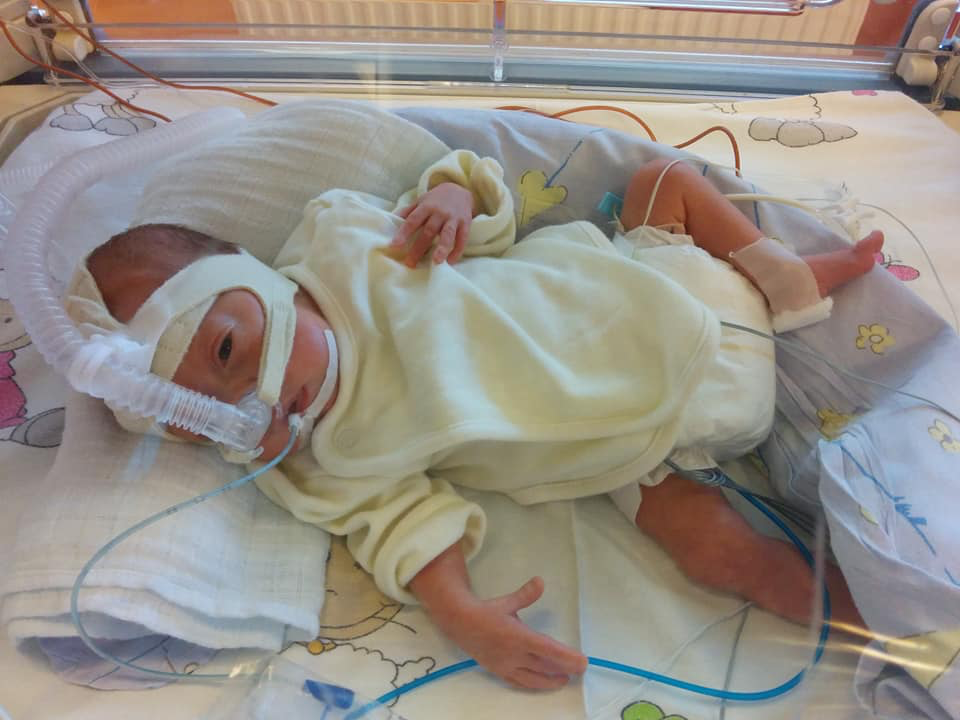

Historia Marysi
widziana oczyma mamy
Rozdział I Walka o życie
W październiku 2016 roku dowiedzieliśmy się, że spodziewamy się dziecka. Nasza radość trwała półtora tygodnia.
Potem pojawiło się pierwsze krwawienie.
Po serii badań i wizyt lekarskich - kiedy słyszeliśmy przeróżne diagnozy - padło ostateczne słowo: zaśniad groniasty. Nowotwór rozwijający się na łożysku. Lekarz wykonujący USG powiedział, że widzi najbardziej nietypowy obraz w swojej karierze: ogromna masa nowotworowa wypełniała całą jamę macicy, a gdzieś na skraju, zepchnięte w bok, było nasze maleńkie dziecko. Dało się je zauważyć tylko dlatego, że serduszko mocno pulsowało. Przy okazji dowiedzieliśmy się, że ciąża była bliźniacza - jedno z dzieci już nie żyło.
Lekarze nie widzieli innej opcji niż terminacja. Nowotwór był wielokrotnie większy od dziecka, markery nowotworowe - ogromnie wysokie. Groziły krwotoki, rzucawka, przejście zaśniadu w formę inwazyjną z przerzutami. A dzieci z ciąż zaśniadowych mają zazwyczaj letalną wadę genetyczną - triploidię - i rzadko przeżywają do końca pierwszego trymestru.
Nasze dziecko jednak żyło. My nie wyrażaliśmy zgody na terminację.
Przez cały pierwszy trymestr miałam wielokrotnie krwotoki, które - za każdym razem - ustępowały samoistnie. Zaczęliśmy odmawiać Nowennę Pompejańską. Z prośbą o cud.
„Gdy przeszukiwałam literaturę medyczną w poszukiwaniu podobnych przypadków, znalazłam tylko siedem opisanych ciąż zaśniadowych, z których urodziły się żywe, zdrowe genetycznie dzieci. Nie śmiałam nawet marzyć, że nasza córeczka może być tą ósmą."
W 13. tygodniu USG genetyczne nie wykazało żadnych nieprawidłowości. Pojawiła się hipoteza: łożysko z nowotworem mogło należeć do martwego bliźniaka, a żyjące dziecko ma swoje - zdrowe. Szanse na utrzymanie ciąży do terminu: 30–40%.
W połowie drugiego trymestru ustały krwawienia. Dowiedzieliśmy się, że spodziewamy się córki. Postanowiliśmy nazwać ją Maria - na cześć Najświętszej Maryi Panny. Kiedy USG pokazało, że córka waży już ponad kilogram, odetchnęliśmy. Byliśmy przekonani, że nawet jeśli ciążę trzeba będzie rozwiązać wcześniej, nowoczesna neonatologia da jej szansę.
Rozdział II Narodziny i szpital
Poród zaczął się nagle - w 28. tygodniu ciąży, w Poniedziałek Wielkanocny.
Jechaliśmy do szpitala, ignorując czerwone światła, z kocami na kolanach - na wypadek, gdyby Marysia urodziła się w samochodzie. Akcja postępowała tak szybko, że nie zdążyłam otrzymać ani sterydów dojrzewających płuca dziecka, ani siarczanu magnezu chroniącego przed krwawieniami śródczaszkowymi.
Marysia urodziła się silna. Oddychała samodzielnie i płakała.
Dano mi ją na chwilę do przytulenia. Potem zabrał ją inkubator transportowy.

Przez ponad miesiąc położenie na Marysi ręki było jedyną formą bezpośredniego kontaktu, na jaki nam pozwalano. Chłonęłam te chwile całą sobą.
Przez pierwsze siedem dni żyliśmy nadzieją. Marysia nie potrzebowała respiratora ani dużych stężeń tlenu. Czekałam, aż lekarze wydadzą pozwolenie na kangurowanie.
Siódmego dnia jej stan nagle się pogorszył. Niedrożność smółkowa, wstrząs septyczny, bardzo silny ból mimo morfiny. Obawiano się perforacji jelit. Karetka zabrała Marysię do szpitala z oddziałem chirurgicznym - w stanie skrajnie ciężkim.
„W środku nocy mąż dzwonił do znajomego księdza, błagając o natychmiastowe odprawienie Mszy Świętej. Nasza córeczka mogła nie dożyć rana."
Tamta noc - i kolejny dzień - były najtrudniejsze w moim życiu. Niewydolność wielonarządowa: oddechowa, krążeniowa, nerki, szpik kostny. Lekarze wielokrotnie walczyli o jej życie. Po kilku dniach stan się ustabilizował.
Wróciliśmy do szpitala macierzystego. Wróciła nadzieja.
Krótko. USG główki uwidoczniło masywny krwotok w tylnym dole czaszki - krew zalewała okolice pnia mózgu. Marysia trafiła na OIOM Centrum Zdrowia Dziecka. Neurochirurg wszczepił jej zbiornik Rickhama - głównie dlatego, że go błagałam. Powiedział wprost: „Nawet jeśli to dziecko cudem przeżyje - nie oszukujmy się - będzie roślinką." Neurolog, oglądając rezonans, przyznał, że nie rozumie, jak Marysia w ogóle żyje z tak uszkodzonym pniem mózgu.
Po tygodniach w szpitalu zabrałam córkę do domu.
Rozdział III Marysia kontra diagnozy - 3:0
Lekarze przewidywali: głuchota, ślepota, brak jakiegokolwiek rozwoju ruchowego. Marysia postanowiła sprawdzić te przewidywania jedna po drugiej.
Diagnoza obalona Słuch
Przez pierwsze pół roku byliśmy przekonani, że Marysia jest całkowicie głucha. Badania ABR nie wykazywały żadnej odpowiedzi mózgu na dźwięki. Droga nerwowa - przerwana na poziomie pnia mózgu. Przygotowywano nas do nauki języka migowego.
Któregoś dnia przypadkowo zauważyłam, że Marysia nieruchomieje w odpowiedzi na głośny dźwięk. Bez aparatów słuchowych. Pojechałyśmy do Światowego Centrum Słuchu w Kajetanach. Nie uwierzono mi - twierdzono, że dziecko wyczuwa wibracje powietrza.
Protetyk zdecydował się jednak zbadać jej reakcje w wolnym polu. I przyciszył aparaty.
Słuch Marysi poprawiał się co kilka miesięcy. Aparaty były przy każdej wizycie ustawiane na coraz niższą moc. Aż pewnego dnia badanie pokazało reakcje na poziomie 35 dB - norma słuchowa. Zdjęłyśmy aparaty.
Marysia zaczęła reagować na swoje imię. Robiła pa pa, brawo, amen. Potrafiła pokazać głowę i części twarzy. Potem pojawiły się sylaby, potem słowa. Mniej więcej w wieku półtora roku - pierwsze zdania. Dziś mówi dłuższe wypowiedzi, zna kilka słów po angielsku, bezbłędnie odtwarza melodie piosenek i recytuje wierszyki z pamięci.
Diagnoza obalona Wzrok
Ze szpitala wyszłyśmy z diagnozą obustronnego zaniku nerwu wzrokowego. Okuliści mówili, że choć Marysia otwiera oczy, to musi nam się wydawać, że patrzy.
Po miesiącu w domu zaczęła wodzić wzrokiem za poruszającym się przedmiotem. Okuliści zasugerowali, że pewnie tak dobry słuch ma, że odwraca się w stronę dźwięku.
Kiedy Marysia zaczęła uśmiechać się do nas w odpowiedzi na uśmiech - wiedzieliśmy już, że diagnozy jej nie dotyczą.
W Ośrodku dla Dzieci Niewidomych i Słabowidzących „Tęcza" terapeuci potwierdzili: Marysia funkcjonuje jak dziecko widzące. Ma zeza neurologicznego i niewielką nadwzroczność. Dziś, bez okularów, łapie ręką drobne ziarna fasoli leżące przed nią na stoliku. Mamę dojrzy z drugiego końca sali gimnastycznej.
W toku Ruch
Z przewidywań neurochirurga co do rozwoju ruchowego Marysi zapamiętałam szczególnie to krótkie zdanie: Będzie roślinką.
Marysia ma czterokończynowe porażenie mózgowe - to jest fakt, który wyznacza jej codzienność. Ale rehabilitacja w połączeniu z jej własną determinacją przynoszą efekty, o których nikt nie śmiał mówić.
W wieku dwóch lat dostała pierwszy wózek aktywny i odkryła wolność. Nauczyła się nim jeździć błyskawicznie - skręcać, wjeżdżać w otwory drzwiowe, poruszać się samodzielnie po domu. W wieku pięciu lat nauczyła się siadać - a potem siedzieć bez asekuracji rękami. Obie ręce wolne. Zabawki. Zaczął się też intensywniejszy rozwój intelektualny.
Potem przyszło pełzanie. Potem przemieszczanie się czworakując - po swojemu, jak skaczący zając. W zeszłym roku operacja ortopedyczna bioder - zakończona sukcesem. Dziś biodra są prawie w normie, a Marysia zyskała możliwość siadu z nogami wyprostowanymi.
„Każdy turnus rehabilitacyjny przynosi kolejne umiejętności. Wiemy, że ciężką pracą nasza córeczka ma szansę stać się kiedyś samodzielna."
Dziś Marysia po domu przemieszcza się sprawnie na czworakach. Na dworze jeździ w wózku aktywnym i radzi sobie z pochylniami w przestrzeni publicznej. Uwielbia chodzenie przy balkoniku.
Jakie będą kolejne rozdziały?
Pomóżcie nam je dopisać. Wasze 1,5% podatku trafia bezpośrednio na rehabilitację i sprzęt dla Marysi - nic nie kosztuje, a dla nas znaczy wszystko.